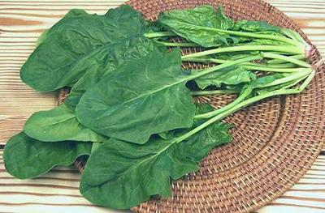
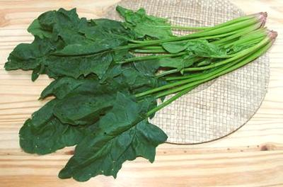

Spinach

[Spinacia oleracea of subfamily Chenopodioideae]
A native of Southwest Asia, spinach is delightful, if properly handled
and cooked, but is easily abused. Many people know it only as a stringy
lump of overcooked mush. Cultivars are Savoy, the most common fresh
spinach, Smooth Leaf, used for frozen and processed spinach (easier to
wash) and Semi-savoy, a sort of all-purpose spinach.
Baby Spinach is sold in plastic bags and boxes for the Yuppie
salad trade (Yuppies will buy anything labeled "baby"). Just about
all the leaves are the almost flavorless oval form.
More on Amaranth Family.
Taiwan Spinach

[presumably Spinacia oleracea]
This spinach is very much like our regular spinach, but a lot larger
and considerably milder. The photo specimens were 22 inches long, but a
few leaves were more than 24 inches. Taiwan spinach is stemmy - but the
stems are very tender and most flavorful part. They should always be
included in the recipe. It is a very fine vegetable for use in stir
fries and soups, and can be used in place of regular spinach.
Taiwan spinach is now grown in California and often available in Asian
markets here in Los Angeles. The photo specimens were from 168 Market on
Valley Blvd. in Alhambra. Do not confuse this spinach with Water Spinach
(Swamp Cabbage) often called "Chinese Spinach" by recipe writers. That is
a very different plant, in the morning glory family.
More on Amaranth Family.
Warm Climate Cuisines:
Über-expert Julie Sahni says
to use Chard (Swiss Chard) rather
than spinach in any Indian recipe calling for "spinach", because Indian
spinach (Palak) is closely related to chard and quite different from our
spinach.
This advice is also valid for all Tropical and most Sub-Tropical
cuisines as well. Our spinach is a cold climate plant, so they'd be
using something else they translate as "spinach", and it is usually
something with leaves that are more durable in cooking.
General Notes:
Spinach is often badly abused both in
handling and in cooking. It is very tender so it breaks up easily and
becomes mush if overcooked. Some people don't use fresh spinach because
they can't get all the sand out. The instructions below will solve
that problem.
Canned spinach is an abomination. Frozen spinach is better but still
not competitive to fresh. Frozen spinach is blanched in the freezing
process so should be cooked the absolute minimum time needed to bring it
to serving temperature.
Buying Spinach
- It's better not to shop for spinach, but to grab it when you see
good bunches for sale at a fair price. Much of the time the price is
high and the bunches are small, mangled and picked before maturity.
Just keep recipes in mind for when it's good.
- Spinach bunches should be large and most of the leaves should be
arrow shaped and crisp. The first leaves the plant puts out are
flavorless and oval. The next batch are thick, leathery, flavorless,
break up easily and spoil quickly. These are also oval. What you
want is bunches of mature leaves which are thin and always
distinctly arrow shaped.
Yield
- A pound of really good spinach will yield 3/4 pound of raw leaves
(75%) leaves, after stems and sub-optimal leaves are removed. Average
bunches will yield less.
- A pound of leaves, carefully prepared and cooked as described below,
with excess water squeezed out and coarsely chopped, will yield 11
ounces (70%), or 1-1/2 cups.
- In other words, to end up with 1 cup of cooked spinach leaves, you
need to start with a 1 pound bunch of excellent spinach. If the bunches
aren't that good, you will need more. 1 cup is roughly equivalent to
a 10 oz package of frozen spinach.
Washing & Storing Spinach
- As soon as you can, fill a sink with cold water, nice and deep. While
it's filling, cut off the root ends of the bundles as close to the root
as will separate all the leaves (real close).
- Untie the bundles and float the leaves in the sink full of water.
slosh them around real good to wash off the mud and sand (which will sink
to the bottom). This is the only way to get all the sand out, rinsing
under running water won't do it.
- Take the leaves out of the water a few at a time and break off the
stems. Carefully select out yellow, mangled or leathery leaves and
discard them. Toss the good leaves directly into your salad spinner and
set the stems aside separately. Don't discard the stems, they're
the sweetest part of the spinach. You want to keep them separate though,
so you can start them cooking ahead of the leaves so they're done before
the leaves are overcooked.
- Spin the leaves in the salad spinner and immediately bag loosely in
(preferably clear) plastic. The spinner leaves just the right amount of
water on the leaves to keep them fresh.
- Spin the stems and package them separately
- Store in the refrigerator. Prepared this way good bunches will be
usable for a week, but try to use them sooner as they steadily lose
flavor.
Cooking Spinach
The key to good spinach is to cook it the very minimum that'll do the
job. The moment its all wilted and the raw color is gone it's done.
If you have prepared the spinach as described above, the amount of
water left on the leaves by the salad spinner should be sufficient for
cooking the spinach. Use a very little oil to keep the leaves from
sticking to the pan.
The ideal pan for cooking spinach is a wok. The large diameter of a
13 inch wok can accommodate 1 pound of raw leaves, it's very easy to keep
tossing the leaves for even cooking. Only a tiny amount of oil is needed,
and as the spinach wilts down it gathers in the bottom.
Health & Nutrition
Spinach's reputation for very high iron content was due to an analyst
slipping a decimal point in 1870, not corrected until 1937, and by then
Popeye the Sailor Man was a fixture. It still has a higher iron content
than most vegetables but not by so spectacular a measure. Spinach is
also high in calcium but a high oxalate content inhibits absorption of
both calcium and iron into the body. On the other hand it is high in
Vitamins A, C and E, folic acid and antioxidants. Due to the Oxalic Acid
it is recommended that people suffering from kidney problems, gout and
rheumatoid arthritis avoid this green
cb_spinachz 070318 - www.clovegarden.com
©Andrew Grygus - agryg@clovegarden.com - Photos on this
page not otherwise credited are © cg1 -
Linking to and non-commercial use of this page permitted